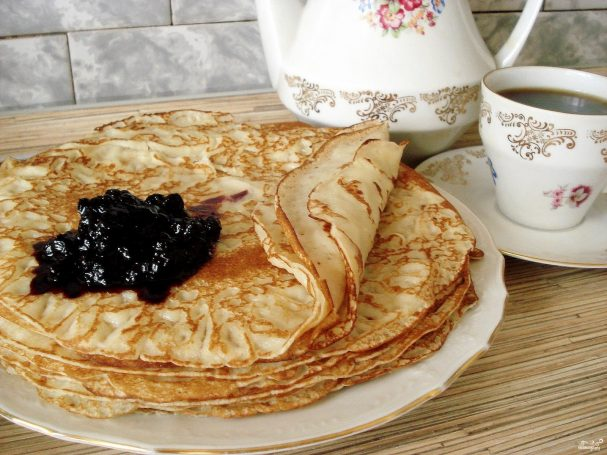

Home
Pancake Recipe

Ingredients:
- 2 eggs
- 2 glasses milk
- 2,5 glasses flour
- 3 tablespoons oil
- 0.5-1 glass boiling water
- 3 tablespoons sugar
- 0.5 teaspoon baking soda
- 0.5 teaspoon salt
Method:
- Prepare all the necessary ingredients.
- Whisk the eggs together with sugar, salt and baking soda in a bowl. You can use an egg whisk.
- Add milk and mix everything thoroughly.
- Gradually sift the flour into the mixture. Beat the batter. It should be smooth.
- Now add oil.
- Then add some boiling water and mix everything quickly. The batter should resemble thick milk.
- Put the pan on the hob and heat some oil. To get thin pancakes, do not fill the ladle with batter to the top. Fry on both sides.
- Fry until golden.
- Serve the pancakes with jam.
Bon appetit!